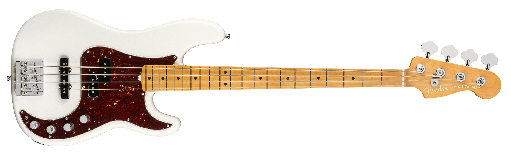
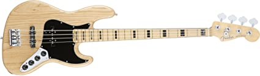
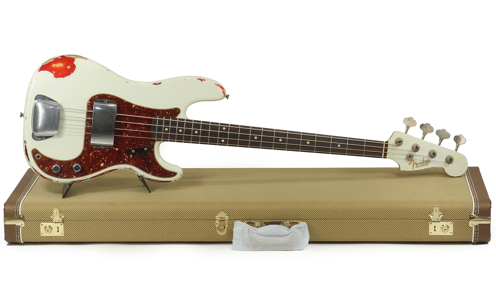

GUITARRAS |
BAJOS |
BAJOS |
GUITARRAS |
BAJOS |
BAJOS |
PRECISION BASS |  |
|  | JAZZ BASSFue el segundo modelo oficial de bajo presentado por Fender. Introducido en 1960 como una especie de versión Deluxe del Precision Bass, el modelo debe su nombre al hecho de que fue presentado como la versión "en bajo" de la guitarra Jazzmaster de Fender, que a su vez pertenecía a la gama alta del catálogo de Fender, dirigida a músicos avanzados de técnica de jazz. Un jazz bass es una gran opción si piensas adquirir un bajo tiene una increible calidad en el sonido, el brazo está diseñado para tener más comodidad al momento de tocar, en especial si lo que tocas es jazz. Este tipo de bajos pertenecen al catálogo de gama alta de FENDER. |
CUSTOM SHOPUn bajo fender costom shop, a diferencia de las guitarras, estos son hechos por ingenieros contratados especialmente para ello y con sus propias ideas no como las guitarras que la idea creativa es absolutamente del artista. Estos bajos a pesar de su gran calidad en la madera, pastillas y clavijas y en sonido, no son los mejores del mercado. Sin embargo, son una gran elección para coleccionar bajos de lujo. |
 |